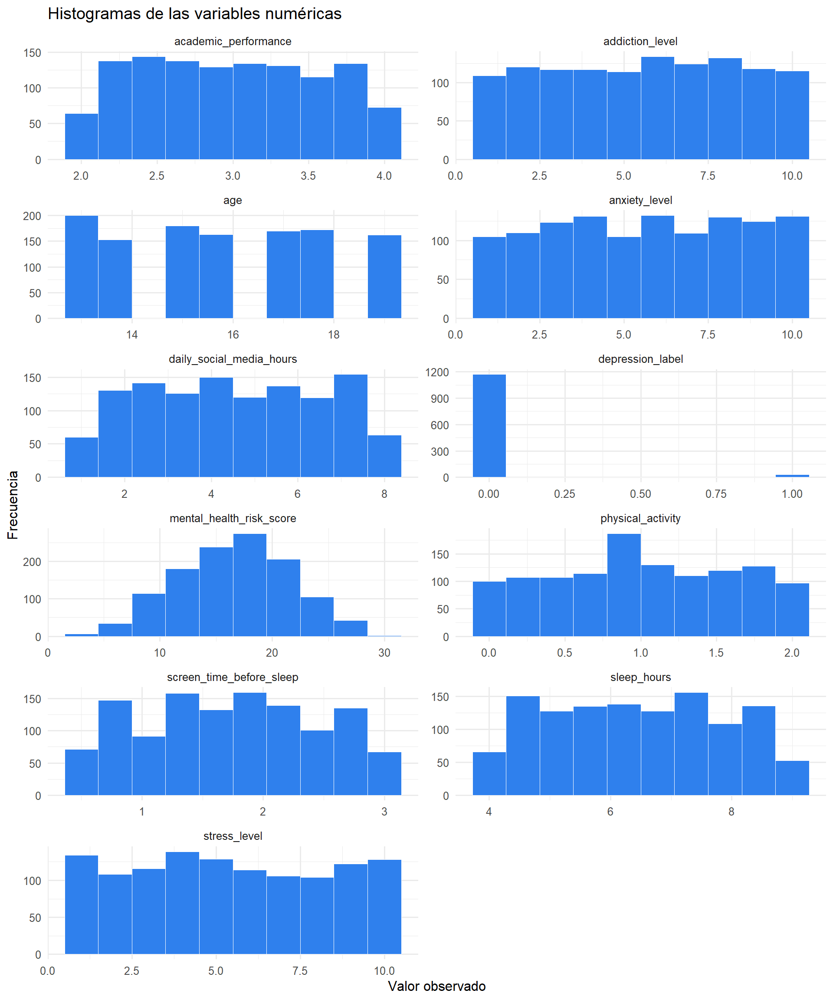
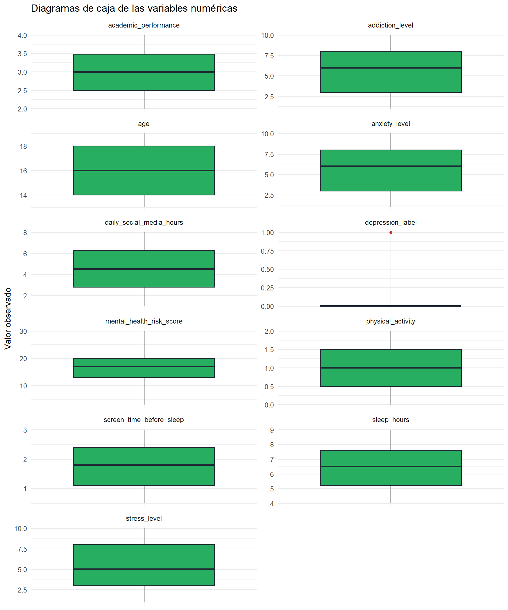

Code
library(tidyverse)
library(knitr)
theme_set(theme_minimal(base_size = 12))
options(
dplyr.summarise.inform = FALSE,
scipen = 999
)Este reporte realiza un análisis exploratorio de datos (EDA) del dataset Teen Mental Health. El mismo trata sobre el estado de salud mental de los adolescentes y si es consecuencia del uso de las redes sociales.
library(tidyverse)
library(knitr)
theme_set(theme_minimal(base_size = 12))
options(
dplyr.summarise.inform = FALSE,
scipen = 999
)archivo <- if (file.exists("Teen_Mental_Health.csv")) {
"Teen_Mental_Health.csv"
} else {
"dataset.csv"
}
datos <- read.csv(
archivo,
stringsAsFactors = FALSE,
fileEncoding = "UTF-8-BOM",
check.names = FALSE
) |>
as_tibble()
glimpse(datos)Rows: 1,200
Columns: 16
$ age <int> 14, 19, 17, 15, 15, 19, 18, 16, 19, 15, 16, 1…
$ gender <chr> "male", "female", "female", "male", "female",…
$ daily_social_media_hours <dbl> 7.9, 1.9, 1.3, 7.4, 4.7, 7.4, 2.5, 4.0, 3.3, …
$ platform_usage <chr> "Facebook", "TikTok", "Instagram", "YouTube",…
$ sleep_hours <dbl> 7.4, 8.0, 7.6, 6.9, 4.9, 4.4, 6.4, 4.2, 5.0, …
$ screen_time_before_sleep <dbl> 2.9, 2.9, 0.5, 1.6, 3.0, 2.4, 2.4, 0.5, 2.1, …
$ academic_performance <dbl> 3.01, 3.22, 3.92, 3.48, 2.37, 2.63, 2.63, 2.4…
$ physical_activity <dbl> 1.5, 0.8, 0.0, 0.8, 1.4, 0.6, 0.7, 1.3, 0.9, …
$ social_interaction_level <chr> "low", "high", "high", "medium", "medium", "h…
$ stress_level <int> 2, 8, 2, 1, 3, 3, 2, 6, 1, 1, 5, 1, 5, 1, 1, …
$ anxiety_level <int> 2, 1, 4, 7, 5, 5, 2, 10, 10, 1, 8, 10, 7, 10,…
$ addiction_level <int> 1, 10, 2, 9, 2, 7, 5, 5, 9, 4, 9, 8, 6, 10, 1…
$ depression_label <int> 0, 0, 0, 0, 0, 0, 0, 0, 0, 0, 0, 0, 0, 0, 0, …
$ mental_health_risk_score <int> 5, 19, 8, 17, 10, 15, 9, 21, 20, 6, 22, 19, 1…
$ sleep_quality <chr> "Fair", "Good", "Fair", "Fair", "Poor", "Poor…
$ digital_wellbeing_flag <chr> "At Risk", "Moderate", "Healthy", "Moderate",…El dataset importado contiene 1200 observaciones y 16 variables. Cada fila representa un registro de un adolescente y cada columna describe una característica asociada al uso de redes sociales, sueño, actividad física, rendimiento académico o indicadores de salud mental.
head(datos, 10) |>
kable(caption = "Primeras 10 observaciones del dataset")| age | gender | daily_social_media_hours | platform_usage | sleep_hours | screen_time_before_sleep | academic_performance | physical_activity | social_interaction_level | stress_level | anxiety_level | addiction_level | depression_label | mental_health_risk_score | sleep_quality | digital_wellbeing_flag |
|---|---|---|---|---|---|---|---|---|---|---|---|---|---|---|---|
| 14 | male | 7.9 | 7.4 | 2.9 | 3.01 | 1.5 | low | 2 | 2 | 1 | 0 | 5 | Fair | At Risk | |
| 19 | female | 1.9 | TikTok | 8.0 | 2.9 | 3.22 | 0.8 | high | 8 | 1 | 10 | 0 | 19 | Good | Moderate |
| 17 | female | 1.3 | 7.6 | 0.5 | 3.92 | 0.0 | high | 2 | 4 | 2 | 0 | 8 | Fair | Healthy | |
| 15 | male | 7.4 | YouTube | 6.9 | 1.6 | 3.48 | 0.8 | medium | 1 | 7 | 9 | 0 | 17 | Fair | Moderate |
| 15 | female | 4.7 | All Platforms | 4.9 | 3.0 | 2.37 | 1.4 | medium | 3 | 5 | 2 | 0 | 10 | Poor | Moderate |
| 19 | female | 7.4 | All Platforms | 4.4 | 2.4 | 2.63 | 0.6 | high | 3 | 5 | 7 | 0 | 15 | Poor | At Risk |
| 18 | female | 2.5 | 6.4 | 2.4 | 2.63 | 0.7 | low | 2 | 2 | 5 | 0 | 9 | Fair | Moderate | |
| 16 | male | 4.0 | All Platforms | 4.2 | 0.5 | 2.40 | 1.3 | low | 6 | 10 | 5 | 0 | 21 | Poor | Moderate |
| 19 | female | 3.3 | YouTube | 5.0 | 2.1 | 2.04 | 0.9 | high | 1 | 10 | 9 | 0 | 20 | Poor | Moderate |
| 15 | male | 1.9 | TikTok | 4.9 | 1.5 | 3.77 | 1.1 | high | 1 | 1 | 4 | 0 | 6 | Poor | Healthy |
Las variables estadísticas se clasifican según el tipo de dato que representan:
clasificacion_variables <- tibble(
variable = names(datos),
tipo_en_r = map_chr(datos, ~ class(.x)[1]),
tipo_estadistico = case_when(
map_lgl(datos, is.numeric) ~ "Numérica",
TRUE ~ "Categórica"
)
)
clasificacion_variables |>
kable(caption = "Clasificación de variables del dataset")| variable | tipo_en_r | tipo_estadistico |
|---|---|---|
| age | integer | Numérica |
| gender | character | Categórica |
| daily_social_media_hours | numeric | Numérica |
| platform_usage | character | Categórica |
| sleep_hours | numeric | Numérica |
| screen_time_before_sleep | numeric | Numérica |
| academic_performance | numeric | Numérica |
| physical_activity | numeric | Numérica |
| social_interaction_level | character | Categórica |
| stress_level | integer | Numérica |
| anxiety_level | integer | Numérica |
| addiction_level | integer | Numérica |
| depression_label | integer | Numérica |
| mental_health_risk_score | integer | Numérica |
| sleep_quality | character | Categórica |
| digital_wellbeing_flag | character | Categórica |
En este dataset, las variables numéricas permiten estudiar magnitudes como edad, horas de sueño, horas de redes sociales, actividad física, niveles de estrés, ansiedad, adicción y puntaje de riesgo de salud mental. Las variables categóricas describen atributos como género, plataforma más usada, nivel de interacción social, etiqueta de depresión, calidad del sueño y bandera de bienestar digital.
calcular_moda <- function(x) {
x <- x[!is.na(x)]
if (length(x) == 0) return(NA_character_)
frecuencias <- sort(table(x), decreasing = TRUE)
max_frecuencia <- max(frecuencias)
modas <- names(frecuencias[frecuencias == max_frecuencia])
paste(modas, collapse = ", ")
}
interpretar_sesgo <- function(media, mediana) {
if (is.na(media) || is.na(mediana)) {
"No evaluable"
} else if (abs(media - mediana) < 0.05) {
"Aproximadamente simétrica"
} else if (media > mediana) {
"Asimetría hacia la derecha"
} else {
"Asimetría hacia la izquierda"
}
}Para cada variable numérica se calculan:
variables_numericas <- datos |>
select(where(is.numeric)) |>
names()
resumen_numerico <- datos |>
summarise(
across(
all_of(variables_numericas),
list(
n = ~ sum(!is.na(.x)),
media = ~ mean(.x, na.rm = TRUE),
mediana = ~ median(.x, na.rm = TRUE),
moda = ~ calcular_moda(.x),
minimo = ~ min(.x, na.rm = TRUE),
q1 = ~ quantile(.x, 0.25, na.rm = TRUE),
q2 = ~ quantile(.x, 0.50, na.rm = TRUE),
q3 = ~ quantile(.x, 0.75, na.rm = TRUE),
maximo = ~ max(.x, na.rm = TRUE),
p5 = ~ quantile(.x, 0.05, na.rm = TRUE),
p10 = ~ quantile(.x, 0.10, na.rm = TRUE),
p90 = ~ quantile(.x, 0.90, na.rm = TRUE),
p95 = ~ quantile(.x, 0.95, na.rm = TRUE)
),
.names = "{.col}__{.fn}"
)
) |>
pivot_longer(
cols = everything(),
names_to = c("variable", "medida"),
names_sep = "__",
values_to = "valor",
values_transform = list(valor = as.character)
) |>
pivot_wider(names_from = medida, values_from = valor) |>
mutate(across(-c(variable, moda), ~ round(as.numeric(.x), 2)))
resumen_numerico |>
kable(caption = "Medidas de posición para variables numéricas")| variable | n | media | mediana | moda | minimo | q1 | q2 | q3 | maximo | p5 | p10 | p90 | p95 |
|---|---|---|---|---|---|---|---|---|---|---|---|---|---|
| age | 1200 | 15.93 | 16.00 | 13 | 13.0 | 14.0 | 16.00 | 18.00 | 19 | 13.00 | 13.00 | 19.00 | 19.0 |
| daily_social_media_hours | 1200 | 4.54 | 4.50 | 3.5 | 1.0 | 2.8 | 4.50 | 6.30 | 8 | 1.40 | 1.70 | 7.40 | 7.7 |
| sleep_hours | 1200 | 6.45 | 6.50 | 6.8, 7.4 | 4.0 | 5.2 | 6.50 | 7.60 | 9 | 4.20 | 4.40 | 8.50 | 8.7 |
| screen_time_before_sleep | 1200 | 1.74 | 1.80 | 1.4 | 0.5 | 1.1 | 1.80 | 2.40 | 3 | 0.60 | 0.70 | 2.70 | 2.9 |
| academic_performance | 1200 | 2.99 | 2.99 | 2.36, 3.9 | 2.0 | 2.5 | 2.99 | 3.48 | 4 | 2.11 | 2.21 | 3.81 | 3.9 |
| physical_activity | 1200 | 1.01 | 1.00 | 1.9 | 0.0 | 0.5 | 1.00 | 1.50 | 2 | 0.10 | 0.20 | 1.80 | 1.9 |
| stress_level | 1200 | 5.45 | 5.00 | 4 | 1.0 | 3.0 | 5.00 | 8.00 | 10 | 1.00 | 1.00 | 10.00 | 10.0 |
| anxiety_level | 1200 | 5.64 | 6.00 | 6 | 1.0 | 3.0 | 6.00 | 8.00 | 10 | 1.00 | 2.00 | 10.00 | 10.0 |
| addiction_level | 1200 | 5.57 | 6.00 | 6 | 1.0 | 3.0 | 6.00 | 8.00 | 10 | 1.00 | 2.00 | 9.00 | 10.0 |
| depression_label | 1200 | 0.03 | 0.00 | 0 | 0.0 | 0.0 | 0.00 | 0.00 | 1 | 0.00 | 0.00 | 0.00 | 0.0 |
| mental_health_risk_score | 1200 | 16.65 | 17.00 | 17, 18 | 3.0 | 13.0 | 17.00 | 20.00 | 30 | 8.00 | 10.00 | 23.00 | 25.0 |
deciles <- datos |>
select(all_of(variables_numericas)) |>
pivot_longer(everything(), names_to = "variable", values_to = "valor") |>
group_by(variable) |>
summarise(
D1 = quantile(valor, 0.10, na.rm = TRUE),
D2 = quantile(valor, 0.20, na.rm = TRUE),
D3 = quantile(valor, 0.30, na.rm = TRUE),
D4 = quantile(valor, 0.40, na.rm = TRUE),
D5 = quantile(valor, 0.50, na.rm = TRUE),
D6 = quantile(valor, 0.60, na.rm = TRUE),
D7 = quantile(valor, 0.70, na.rm = TRUE),
D8 = quantile(valor, 0.80, na.rm = TRUE),
D9 = quantile(valor, 0.90, na.rm = TRUE),
.groups = "drop"
) |>
mutate(across(where(is.numeric), ~ round(.x, 2)))
deciles |>
kable(caption = "Deciles de las variables numéricas")| variable | D1 | D2 | D3 | D4 | D5 | D6 | D7 | D8 | D9 |
|---|---|---|---|---|---|---|---|---|---|
| academic_performance | 2.21 | 2.39 | 2.57 | 2.77 | 2.99 | 3.19 | 3.39 | 3.60 | 3.81 |
| addiction_level | 2.00 | 3.00 | 4.00 | 5.00 | 6.00 | 7.00 | 8.00 | 8.00 | 9.00 |
| age | 13.00 | 14.00 | 15.00 | 15.00 | 16.00 | 17.00 | 17.00 | 18.00 | 19.00 |
| anxiety_level | 2.00 | 3.00 | 4.00 | 5.00 | 6.00 | 7.00 | 8.00 | 9.00 | 10.00 |
| daily_social_media_hours | 1.70 | 2.40 | 3.20 | 3.80 | 4.50 | 5.20 | 5.90 | 6.62 | 7.40 |
| depression_label | 0.00 | 0.00 | 0.00 | 0.00 | 0.00 | 0.00 | 0.00 | 0.00 | 0.00 |
| mental_health_risk_score | 10.00 | 12.00 | 14.00 | 15.00 | 17.00 | 18.00 | 19.00 | 21.00 | 23.00 |
| physical_activity | 0.20 | 0.40 | 0.60 | 0.80 | 1.00 | 1.20 | 1.40 | 1.60 | 1.80 |
| screen_time_before_sleep | 0.70 | 1.00 | 1.30 | 1.50 | 1.80 | 2.00 | 2.20 | 2.50 | 2.70 |
| sleep_hours | 4.40 | 4.98 | 5.40 | 5.96 | 6.50 | 6.90 | 7.40 | 7.90 | 8.50 |
| stress_level | 1.00 | 2.00 | 4.00 | 4.00 | 5.00 | 6.00 | 7.00 | 9.00 | 10.00 |
En las variables categóricas no se calculan media, mediana o cuantiles porque sus valores son etiquetas y no cantidades. Para describirlas se utiliza la moda y las frecuencias de cada categoría.
variables_categoricas <- datos |>
select(!where(is.numeric)) |>
names()
resumen_categorico <- datos |>
summarise(
across(
all_of(variables_categoricas),
list(
n = ~ sum(!is.na(.x)),
categorias = ~ n_distinct(.x, na.rm = TRUE),
moda = ~ calcular_moda(.x)
),
.names = "{.col}__{.fn}"
)
) |>
pivot_longer(
cols = everything(),
names_to = c("variable", "medida"),
names_sep = "__",
values_to = "valor",
values_transform = list(valor = as.character)
) |>
pivot_wider(names_from = medida, values_from = valor)
resumen_categorico |>
kable(caption = "Resumen de variables categóricas")| variable | n | categorias | moda |
|---|---|---|---|
| gender | 1200 | 2 | male |
| platform_usage | 1200 | 5 | All Platforms |
| social_interaction_level | 1200 | 3 | medium |
| sleep_quality | 1200 | 3 | Fair |
| digital_wellbeing_flag | 1200 | 3 | Moderate |
Un histograma agrupa datos numéricos continuos o discretos en intervalos de clase. Cada intervalo tiene un límite inferior y un límite superior. La amplitud es el tamaño del intervalo y la marca de clase es el punto medio, calculado como:
[ = ]
La tabla de frecuencias indica cuántas observaciones caen en cada intervalo:
crear_tabla_frecuencia <- function(data, variable, bins = NULL) {
x <- data[[variable]]
x <- x[!is.na(x)]
if (is.null(bins)) {
bins <- ceiling(1 + log2(length(x)))
}
cortes <- pretty(range(x), n = bins)
tibble(valor = x) |>
mutate(intervalo = cut(valor, breaks = cortes, include.lowest = TRUE, right = FALSE)) |>
count(intervalo, name = "frecuencia_absoluta") |>
mutate(
limite_inferior = as.numeric(str_extract(as.character(intervalo), "-?\\d+\\.?\\d*")),
limite_superior = as.numeric(str_extract(as.character(intervalo), "(?<=,)\\s*-?\\d+\\.?\\d*")),
amplitud = limite_superior - limite_inferior,
marca_de_clase = (limite_inferior + limite_superior) / 2,
frecuencia_relativa = frecuencia_absoluta / sum(frecuencia_absoluta),
frecuencia_porcentual = frecuencia_relativa * 100,
frecuencia_acumulada = cumsum(frecuencia_absoluta)
) |>
select(
intervalo,
limite_inferior,
limite_superior,
amplitud,
marca_de_clase,
frecuencia_absoluta,
frecuencia_relativa,
frecuencia_porcentual,
frecuencia_acumulada
)
}
tablas_histograma <- map(
variables_numericas,
~ crear_tabla_frecuencia(datos, .x) |>
mutate(variable = .x, .before = 1)
) |>
bind_rows()
tablas_histograma |>
mutate(
across(
c(limite_inferior, limite_superior, amplitud, marca_de_clase,
frecuencia_relativa, frecuencia_porcentual),
~ round(.x, 3)
)
) |>
kable(caption = "Tablas de frecuencias por intervalos para variables numéricas")| variable | intervalo | limite_inferior | limite_superior | amplitud | marca_de_clase | frecuencia_absoluta | frecuencia_relativa | frecuencia_porcentual | frecuencia_acumulada |
|---|---|---|---|---|---|---|---|---|---|
| age | [13,13.5) | 13.0 | 13.5 | 0.5 | 13.25 | 200 | 0.167 | 16.667 | 200 |
| age | [14,14.5) | 14.0 | 14.5 | 0.5 | 14.25 | 153 | 0.128 | 12.750 | 353 |
| age | [15,15.5) | 15.0 | 15.5 | 0.5 | 15.25 | 180 | 0.150 | 15.000 | 533 |
| age | [16,16.5) | 16.0 | 16.5 | 0.5 | 16.25 | 163 | 0.136 | 13.583 | 696 |
| age | [17,17.5) | 17.0 | 17.5 | 0.5 | 17.25 | 170 | 0.142 | 14.167 | 866 |
| age | [18,18.5) | 18.0 | 18.5 | 0.5 | 18.25 | 172 | 0.143 | 14.333 | 1038 |
| age | [18.5,19] | 18.5 | 19.0 | 0.5 | 18.75 | 162 | 0.135 | 13.500 | 1200 |
| daily_social_media_hours | [1,1.5) | 1.0 | 1.5 | 0.5 | 1.25 | 73 | 0.061 | 6.083 | 73 |
| daily_social_media_hours | [1.5,2) | 1.5 | 2.0 | 0.5 | 1.75 | 78 | 0.065 | 6.500 | 151 |
| daily_social_media_hours | [2,2.5) | 2.0 | 2.5 | 0.5 | 2.25 | 92 | 0.077 | 7.667 | 243 |
| daily_social_media_hours | [2.5,3) | 2.5 | 3.0 | 0.5 | 2.75 | 88 | 0.073 | 7.333 | 331 |
| daily_social_media_hours | [3,3.5) | 3.0 | 3.5 | 0.5 | 3.25 | 66 | 0.055 | 5.500 | 397 |
| daily_social_media_hours | [3.5,4) | 3.5 | 4.0 | 0.5 | 3.75 | 105 | 0.088 | 8.750 | 502 |
| daily_social_media_hours | [4,4.5) | 4.0 | 4.5 | 0.5 | 4.25 | 87 | 0.072 | 7.250 | 589 |
| daily_social_media_hours | [4.5,5) | 4.5 | 5.0 | 0.5 | 4.75 | 79 | 0.066 | 6.583 | 668 |
| daily_social_media_hours | [5,5.5) | 5.0 | 5.5 | 0.5 | 5.25 | 101 | 0.084 | 8.417 | 769 |
| daily_social_media_hours | [5.5,6) | 5.5 | 6.0 | 0.5 | 5.75 | 80 | 0.067 | 6.667 | 849 |
| daily_social_media_hours | [6,6.5) | 6.0 | 6.5 | 0.5 | 6.25 | 74 | 0.062 | 6.167 | 923 |
| daily_social_media_hours | [6.5,7) | 6.5 | 7.0 | 0.5 | 6.75 | 72 | 0.060 | 6.000 | 995 |
| daily_social_media_hours | [7,7.5) | 7.0 | 7.5 | 0.5 | 7.25 | 105 | 0.088 | 8.750 | 1100 |
| daily_social_media_hours | [7.5,8] | 7.5 | 8.0 | 0.5 | 7.75 | 100 | 0.083 | 8.333 | 1200 |
| sleep_hours | [4,4.5) | 4.0 | 4.5 | 0.5 | 4.25 | 124 | 0.103 | 10.333 | 124 |
| sleep_hours | [4.5,5) | 4.5 | 5.0 | 0.5 | 4.75 | 116 | 0.097 | 9.667 | 240 |
| sleep_hours | [5,5.5) | 5.0 | 5.5 | 0.5 | 5.25 | 127 | 0.106 | 10.583 | 367 |
| sleep_hours | [5.5,6) | 5.5 | 6.0 | 0.5 | 5.75 | 113 | 0.094 | 9.417 | 480 |
| sleep_hours | [6,6.5) | 6.0 | 6.5 | 0.5 | 6.25 | 114 | 0.095 | 9.500 | 594 |
| sleep_hours | [6.5,7) | 6.5 | 7.0 | 0.5 | 6.75 | 127 | 0.106 | 10.583 | 721 |
| sleep_hours | [7,7.5) | 7.0 | 7.5 | 0.5 | 7.25 | 133 | 0.111 | 11.083 | 854 |
| sleep_hours | [7.5,8) | 7.5 | 8.0 | 0.5 | 7.75 | 108 | 0.090 | 9.000 | 962 |
| sleep_hours | [8,8.5) | 8.0 | 8.5 | 0.5 | 8.25 | 112 | 0.093 | 9.333 | 1074 |
| sleep_hours | [8.5,9] | 8.5 | 9.0 | 0.5 | 8.75 | 126 | 0.105 | 10.500 | 1200 |
| screen_time_before_sleep | [0.4,0.6) | 0.4 | 0.6 | 0.2 | 0.50 | 71 | 0.059 | 5.917 | 71 |
| screen_time_before_sleep | [0.6,0.8) | 0.6 | 0.8 | 0.2 | 0.70 | 53 | 0.044 | 4.417 | 124 |
| screen_time_before_sleep | [0.8,1) | 0.8 | 1.0 | 0.2 | 0.90 | 94 | 0.078 | 7.833 | 218 |
| screen_time_before_sleep | [1,1.2) | 1.0 | 1.2 | 0.2 | 1.10 | 136 | 0.113 | 11.333 | 354 |
| screen_time_before_sleep | [1.2,1.4) | 1.2 | 1.4 | 0.2 | 1.30 | 46 | 0.038 | 3.833 | 400 |
| screen_time_before_sleep | [1.4,1.6) | 1.4 | 1.6 | 0.2 | 1.50 | 119 | 0.099 | 9.917 | 519 |
| screen_time_before_sleep | [1.6,1.8) | 1.6 | 1.8 | 0.2 | 1.70 | 130 | 0.108 | 10.833 | 649 |
| screen_time_before_sleep | [1.8,2) | 1.8 | 2.0 | 0.2 | 1.90 | 56 | 0.047 | 4.667 | 705 |
| screen_time_before_sleep | [2,2.2) | 2.0 | 2.2 | 0.2 | 2.10 | 103 | 0.086 | 8.583 | 808 |
| screen_time_before_sleep | [2.2,2.4) | 2.2 | 2.4 | 0.2 | 2.30 | 89 | 0.074 | 7.417 | 897 |
| screen_time_before_sleep | [2.4,2.6) | 2.4 | 2.6 | 0.2 | 2.50 | 101 | 0.084 | 8.417 | 998 |
| screen_time_before_sleep | [2.6,2.8) | 2.6 | 2.8 | 0.2 | 2.70 | 135 | 0.112 | 11.250 | 1133 |
| screen_time_before_sleep | [2.8,3] | 2.8 | 3.0 | 0.2 | 2.90 | 67 | 0.056 | 5.583 | 1200 |
| academic_performance | [2,2.2) | 2.0 | 2.2 | 0.2 | 2.10 | 113 | 0.094 | 9.417 | 113 |
| academic_performance | [2.2,2.4) | 2.2 | 2.4 | 0.2 | 2.30 | 128 | 0.107 | 10.667 | 241 |
| academic_performance | [2.4,2.6) | 2.4 | 2.6 | 0.2 | 2.50 | 129 | 0.108 | 10.750 | 370 |
| academic_performance | [2.6,2.8) | 2.6 | 2.8 | 0.2 | 2.70 | 124 | 0.103 | 10.333 | 494 |
| academic_performance | [2.8,3) | 2.8 | 3.0 | 0.2 | 2.90 | 114 | 0.095 | 9.500 | 608 |
| academic_performance | [3,3.2) | 3.0 | 3.2 | 0.2 | 3.10 | 118 | 0.098 | 9.833 | 726 |
| academic_performance | [3.2,3.4) | 3.2 | 3.4 | 0.2 | 3.30 | 123 | 0.102 | 10.250 | 849 |
| academic_performance | [3.4,3.6) | 3.4 | 3.6 | 0.2 | 3.50 | 110 | 0.092 | 9.167 | 959 |
| academic_performance | [3.6,3.8) | 3.6 | 3.8 | 0.2 | 3.70 | 115 | 0.096 | 9.583 | 1074 |
| academic_performance | [3.8,4] | 3.8 | 4.0 | 0.2 | 3.90 | 126 | 0.105 | 10.500 | 1200 |
| physical_activity | [0,0.2) | 0.0 | 0.2 | 0.2 | 0.10 | 100 | 0.083 | 8.333 | 100 |
| physical_activity | [0.2,0.4) | 0.2 | 0.4 | 0.2 | 0.30 | 107 | 0.089 | 8.917 | 207 |
| physical_activity | [0.4,0.6) | 0.4 | 0.6 | 0.2 | 0.50 | 166 | 0.138 | 13.833 | 373 |
| physical_activity | [0.6,0.8) | 0.6 | 0.8 | 0.2 | 0.70 | 55 | 0.046 | 4.583 | 428 |
| physical_activity | [0.8,1) | 0.8 | 1.0 | 0.2 | 0.90 | 119 | 0.099 | 9.917 | 547 |
| physical_activity | [1,1.2) | 1.0 | 1.2 | 0.2 | 1.10 | 198 | 0.165 | 16.500 | 745 |
| physical_activity | [1.2,1.4) | 1.2 | 1.4 | 0.2 | 1.30 | 110 | 0.092 | 9.167 | 855 |
| physical_activity | [1.4,1.6) | 1.4 | 1.6 | 0.2 | 1.50 | 64 | 0.053 | 5.333 | 919 |
| physical_activity | [1.6,1.8) | 1.6 | 1.8 | 0.2 | 1.70 | 121 | 0.101 | 10.083 | 1040 |
| physical_activity | [1.8,2] | 1.8 | 2.0 | 0.2 | 1.90 | 160 | 0.133 | 13.333 | 1200 |
| stress_level | [1,2) | 1.0 | 2.0 | 1.0 | 1.50 | 134 | 0.112 | 11.167 | 134 |
| stress_level | [2,3) | 2.0 | 3.0 | 1.0 | 2.50 | 108 | 0.090 | 9.000 | 242 |
| stress_level | [3,4) | 3.0 | 4.0 | 1.0 | 3.50 | 116 | 0.097 | 9.667 | 358 |
| stress_level | [4,5) | 4.0 | 5.0 | 1.0 | 4.50 | 139 | 0.116 | 11.583 | 497 |
| stress_level | [5,6) | 5.0 | 6.0 | 1.0 | 5.50 | 129 | 0.108 | 10.750 | 626 |
| stress_level | [6,7) | 6.0 | 7.0 | 1.0 | 6.50 | 114 | 0.095 | 9.500 | 740 |
| stress_level | [7,8) | 7.0 | 8.0 | 1.0 | 7.50 | 106 | 0.088 | 8.833 | 846 |
| stress_level | [8,9) | 8.0 | 9.0 | 1.0 | 8.50 | 104 | 0.087 | 8.667 | 950 |
| stress_level | [9,10] | 9.0 | 10.0 | 1.0 | 9.50 | 250 | 0.208 | 20.833 | 1200 |
| anxiety_level | [1,2) | 1.0 | 2.0 | 1.0 | 1.50 | 105 | 0.088 | 8.750 | 105 |
| anxiety_level | [2,3) | 2.0 | 3.0 | 1.0 | 2.50 | 110 | 0.092 | 9.167 | 215 |
| anxiety_level | [3,4) | 3.0 | 4.0 | 1.0 | 3.50 | 123 | 0.102 | 10.250 | 338 |
| anxiety_level | [4,5) | 4.0 | 5.0 | 1.0 | 4.50 | 131 | 0.109 | 10.917 | 469 |
| anxiety_level | [5,6) | 5.0 | 6.0 | 1.0 | 5.50 | 105 | 0.088 | 8.750 | 574 |
| anxiety_level | [6,7) | 6.0 | 7.0 | 1.0 | 6.50 | 132 | 0.110 | 11.000 | 706 |
| anxiety_level | [7,8) | 7.0 | 8.0 | 1.0 | 7.50 | 109 | 0.091 | 9.083 | 815 |
| anxiety_level | [8,9) | 8.0 | 9.0 | 1.0 | 8.50 | 130 | 0.108 | 10.833 | 945 |
| anxiety_level | [9,10] | 9.0 | 10.0 | 1.0 | 9.50 | 255 | 0.212 | 21.250 | 1200 |
| addiction_level | [1,2) | 1.0 | 2.0 | 1.0 | 1.50 | 109 | 0.091 | 9.083 | 109 |
| addiction_level | [2,3) | 2.0 | 3.0 | 1.0 | 2.50 | 120 | 0.100 | 10.000 | 229 |
| addiction_level | [3,4) | 3.0 | 4.0 | 1.0 | 3.50 | 117 | 0.098 | 9.750 | 346 |
| addiction_level | [4,5) | 4.0 | 5.0 | 1.0 | 4.50 | 117 | 0.098 | 9.750 | 463 |
| addiction_level | [5,6) | 5.0 | 6.0 | 1.0 | 5.50 | 114 | 0.095 | 9.500 | 577 |
| addiction_level | [6,7) | 6.0 | 7.0 | 1.0 | 6.50 | 134 | 0.112 | 11.167 | 711 |
| addiction_level | [7,8) | 7.0 | 8.0 | 1.0 | 7.50 | 124 | 0.103 | 10.333 | 835 |
| addiction_level | [8,9) | 8.0 | 9.0 | 1.0 | 8.50 | 132 | 0.110 | 11.000 | 967 |
| addiction_level | [9,10] | 9.0 | 10.0 | 1.0 | 9.50 | 233 | 0.194 | 19.417 | 1200 |
| depression_label | [0,0.1) | 0.0 | 0.1 | 0.1 | 0.05 | 1169 | 0.974 | 97.417 | 1169 |
| depression_label | [0.9,1] | 0.9 | 1.0 | 0.1 | 0.95 | 31 | 0.026 | 2.583 | 1200 |
| mental_health_risk_score | [2,4) | 2.0 | 4.0 | 2.0 | 3.00 | 1 | 0.001 | 0.083 | 1 |
| mental_health_risk_score | [4,6) | 4.0 | 6.0 | 2.0 | 5.00 | 17 | 0.014 | 1.417 | 18 |
| mental_health_risk_score | [6,8) | 6.0 | 8.0 | 2.0 | 7.00 | 22 | 0.018 | 1.833 | 40 |
| mental_health_risk_score | [8,10) | 8.0 | 10.0 | 2.0 | 9.00 | 64 | 0.053 | 5.333 | 104 |
| mental_health_risk_score | [10,12) | 10.0 | 12.0 | 2.0 | 11.00 | 98 | 0.082 | 8.167 | 202 |
| mental_health_risk_score | [12,14) | 12.0 | 14.0 | 2.0 | 13.00 | 132 | 0.110 | 11.000 | 334 |
| mental_health_risk_score | [14,16) | 14.0 | 16.0 | 2.0 | 15.00 | 150 | 0.125 | 12.500 | 484 |
| mental_health_risk_score | [16,18) | 16.0 | 18.0 | 2.0 | 17.00 | 183 | 0.152 | 15.250 | 667 |
| mental_health_risk_score | [18,20) | 18.0 | 20.0 | 2.0 | 19.00 | 179 | 0.149 | 14.917 | 846 |
| mental_health_risk_score | [20,22) | 20.0 | 22.0 | 2.0 | 21.00 | 139 | 0.116 | 11.583 | 985 |
| mental_health_risk_score | [22,24) | 22.0 | 24.0 | 2.0 | 23.00 | 106 | 0.088 | 8.833 | 1091 |
| mental_health_risk_score | [24,26) | 24.0 | 26.0 | 2.0 | 25.00 | 65 | 0.054 | 5.417 | 1156 |
| mental_health_risk_score | [26,28) | 26.0 | 28.0 | 2.0 | 27.00 | 31 | 0.026 | 2.583 | 1187 |
| mental_health_risk_score | [28,30] | 28.0 | 30.0 | 2.0 | 29.00 | 13 | 0.011 | 1.083 | 1200 |
En la construcción del histograma, las barras son adyacentes porque los intervalos representan rangos continuos. El eje horizontal muestra los intervalos de clase y el eje vertical muestra la frecuencia. Cuando los intervalos tienen la misma amplitud, la altura de cada barra permite comparar directamente la frecuencia de cada clase.
Los histogramas se construyen para las variables numéricas, ya que estas variables permiten ordenar y agrupar los datos en intervalos.
datos |>
select(all_of(variables_numericas)) |>
pivot_longer(everything(), names_to = "variable", values_to = "valor") |>
ggplot(aes(x = valor)) +
geom_histogram(bins = 10, fill = "#2F80ED", color = "white", linewidth = 0.3) +
facet_wrap(~ variable, scales = "free", ncol = 2) +
labs(
title = "Histogramas de las variables numéricas",
x = "Valor observado",
y = "Frecuencia"
)
Los diagramas de caja permiten observar la mediana, los cuartiles, el rango intercuartílico y posibles valores atípicos. Igual que los histogramas, se construyen para las variables numéricas.
datos |>
select(all_of(variables_numericas)) |>
pivot_longer(everything(), names_to = "variable", values_to = "valor") |>
ggplot(aes(x = variable, y = valor)) +
geom_boxplot(fill = "#27AE60", color = "#1F2933", outlier.color = "#C0392B") +
facet_wrap(~ variable, scales = "free", ncol = 2) +
labs(
title = "Diagramas de caja de las variables numéricas",
x = NULL,
y = "Valor observado"
) +
theme(axis.text.x = element_blank())
Para interpretar un histograma se observa la forma general de la distribución:
interpretacion_numerica <- datos |>
select(all_of(variables_numericas)) |>
pivot_longer(everything(), names_to = "variable", values_to = "valor") |>
group_by(variable) |>
summarise(
media = mean(valor, na.rm = TRUE),
mediana = median(valor, na.rm = TRUE),
q1 = quantile(valor, 0.25, na.rm = TRUE),
q3 = quantile(valor, 0.75, na.rm = TRUE),
iqr = IQR(valor, na.rm = TRUE),
limite_inferior_atipicos = q1 - 1.5 * iqr,
limite_superior_atipicos = q3 + 1.5 * iqr,
posibles_atipicos = sum(
valor < limite_inferior_atipicos | valor > limite_superior_atipicos,
na.rm = TRUE
),
forma_aproximada = interpretar_sesgo(media, mediana),
.groups = "drop"
) |>
mutate(across(where(is.numeric), ~ round(.x, 2)))
interpretacion_numerica |>
kable(caption = "Interpretación resumida de la forma de las distribuciones numéricas")| variable | media | mediana | q1 | q3 | iqr | limite_inferior_atipicos | limite_superior_atipicos | posibles_atipicos | forma_aproximada |
|---|---|---|---|---|---|---|---|---|---|
| academic_performance | 2.99 | 2.99 | 2.5 | 3.48 | 0.98 | 1.03 | 4.95 | 0 | Aproximadamente simétrica |
| addiction_level | 5.57 | 6.00 | 3.0 | 8.00 | 5.00 | -4.50 | 15.50 | 0 | Asimetría hacia la izquierda |
| age | 15.93 | 16.00 | 14.0 | 18.00 | 4.00 | 8.00 | 24.00 | 0 | Asimetría hacia la izquierda |
| anxiety_level | 5.64 | 6.00 | 3.0 | 8.00 | 5.00 | -4.50 | 15.50 | 0 | Asimetría hacia la izquierda |
| daily_social_media_hours | 4.54 | 4.50 | 2.8 | 6.30 | 3.50 | -2.45 | 11.55 | 0 | Aproximadamente simétrica |
| depression_label | 0.03 | 0.00 | 0.0 | 0.00 | 0.00 | 0.00 | 0.00 | 31 | Aproximadamente simétrica |
| mental_health_risk_score | 16.65 | 17.00 | 13.0 | 20.00 | 7.00 | 2.50 | 30.50 | 0 | Asimetría hacia la izquierda |
| physical_activity | 1.01 | 1.00 | 0.5 | 1.50 | 1.00 | -1.00 | 3.00 | 0 | Aproximadamente simétrica |
| screen_time_before_sleep | 1.74 | 1.80 | 1.1 | 2.40 | 1.30 | -0.85 | 4.35 | 0 | Asimetría hacia la izquierda |
| sleep_hours | 6.45 | 6.50 | 5.2 | 7.60 | 2.40 | 1.60 | 11.20 | 0 | Asimetría hacia la izquierda |
| stress_level | 5.45 | 5.00 | 3.0 | 8.00 | 5.00 | -4.50 | 15.50 | 0 | Asimetría hacia la derecha |
En términos generales, esta tabla permite relacionar lo observado en los histogramas con medidas numéricas. Cuando la media y la mediana son parecidas, la variable tiende a presentar una distribución más equilibrada. Si la media es mayor que la mediana, se interpreta como sesgo hacia valores altos. Si la media es menor que la mediana, se interpreta como sesgo hacia valores bajos. La columna de posibles valores atípicos complementa lo observado en los diagramas de caja.